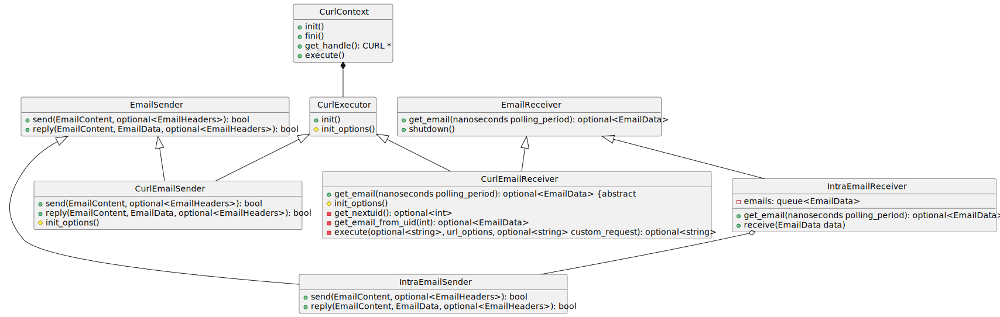
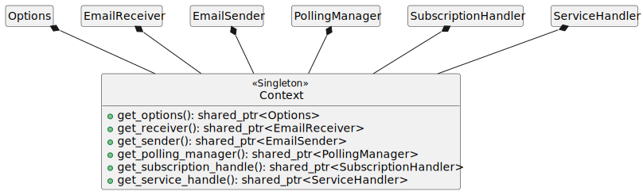
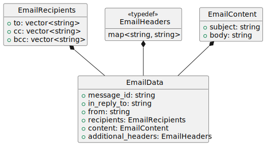
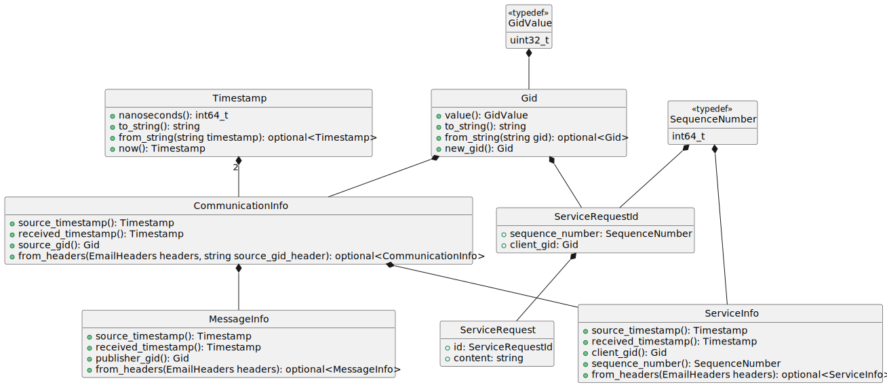

email design
- Use of emails
- As a message container
- Headers
- Polling
- Overall architecture
- Sending and receiving emails
- Internal handling of emails
- Global context
- Waiting on messages
- Data containers
- Email
- Messages
Use of emails
As a message container
Emails are used as a container to send and receive string messages.
The email subject is used for the topic name or service name. The email body contains the string message.
Emails include both standard and non-standard (i.e., custom) headers. Email headers are used to include metadata about each communication instance in a structured way without polluting the content itself (i.e., email body). See Data containers. These custom headers do not have a X- prefix as per RFC 6648.
This metadata is thus also used to be able to differentiate between publisher/subscription messages and service requests/responses. See Overall architecture.
The headers of the service response emails are set so that the email is a reply to the original service request email. This is done by setting the values of the In-Reply-To and References headers of the response email to the value of the Message-ID header of the request email. See page 26 of RFC 5322.
The use of these headers also helps differentiate between a service request and a service response.
Polling
To poll for new emails using the IMAP protocol commands, we can:
- first run an
EXAMINE INBOX command to get the UID value of the next email
- a UID is simply a unique identifier for each email
- the next UID value is called
UIDNEXT in the command response
- see RFC 3501 section 6.3.2 for the
EXAMINE command and response
- then periodically try to fetch en email using that UID
- if there is no new email, the command will fail
- if there is a new email, we increment an internal UID counter
- then we repeat this step with this new value
Overall architecture
Sending and receiving emails
There are three main layers to send and receive messages:
curl: context, executor
- does basic
libcurl initialization
- connects to remote server
- email: sender, receiver
- uses the first layer with
libcurl to execute commands to:
- send emails through
smtps (secure SMTP)
- poll for emails through
imaps (secure IMAP)
- email senders can send an email that is a reply to an email received by an email receiver
- see Use of emails
- publisher/subscription and service client/server
- publishers are simply email senders
- subscriptions indirectly use email receivers
- service clients use publishers to send requests and indirectly use email receivers to receive responses
- service servers indirectly use email receivers to receive requests and use email senders to send responses by replying to the request email
For intraprocess communication, a different set of email sender and email receiver is used:
- intraprocess email sender
- has a reference to the intraprocess email receiver
- when sending or replying, it simply hands the email over to the intraprocess email receiver
- intraprocess email receiver
- has a function that receives a new email, adds a random message ID, and adds it to its queue
- faking/adding a message ID is required to support downstream logic that depends on email replies
- see Headers
- when queried for a new email, it simply returns one from its queue if it’s not empty

Internal handling of emails
Internal handling of emails/mesages is done as follows:
- polling manager
- uses an email receiver to poll for new emails on a thread
- calls all registered handlers when a new email is received
- handlers: subscription, service client/server
- all handlers register with the polling manager
- handlers check whether the new email applies to them
- if so, they pass it on to the right object(s) that registered with them
- according to topic name or service name
- subscriptions, service clients/servers
- all subscriptions register with the subscription handler
- all service clients and servers register with the service handler
- new messages, service requests or service responses are added to the corresponding queues or maps
- subscriptions have a message queue
- service clients have a response map
- service servers have a request queue
- users can either poll the subscription/client/server directly for new messages/requests/responses or wait on it

Global context
A global context owns global objects (i.e., all effectively singletons):
- options container
- email receiver, email sender
- polling manager
- subscription handler, service handler
Those objects are made available globally to anything that needs them:
- publishers and service servers to get the email sender
- polling manager to get the email receiver
- subscription handler and service handler to register with the polling manager
- subscriptions and service clients/servers to register with the subscription handler and service handler, respectively

Waiting on messages
Subscriptions and service clients/servers must be waited on through polling. Wait sets can be used to wait for new messages, service requests or service responses. Some utility functions can be used to wait on a specific entity using a wait set without needing to manually create a wait set for that single entity.
Wait sets also support guard conditions as simple conditions with triggers. A guard condition cannot be added to more than one wait set at a time.
Wait sets are empty when created; entities can be added after creation. Wait sets can contain any number of each kind of entity and they can also contain none. Waiting on an empty wait set is valid and is equivalent to a sleep call. Wait sets can be used to wait on the same set of entities multiple times They can also be cleared and re-used to wait on a different set of entities.
Waiting can be:
- blocking indefinitely with a negative timeout value
- non-blocking with a timeout value equal to zero
- blocking with a timeout if the value is greater than zero

Data containers
Email
Emails contain:
- recipients
- subject
- body
- headers (metadata)

Messages
Basic metadata is provided for all communication instances (i.e., messages, service requests or service responses):
- source timestamp
- reception timestamp
- GID of the source object (i.e., publisher, service client or service server)
- a GID is just a unique identifier
Additionally, for service requests/responses:
- sequence number of the request
- for service responses, this is the sequence number of the original request
